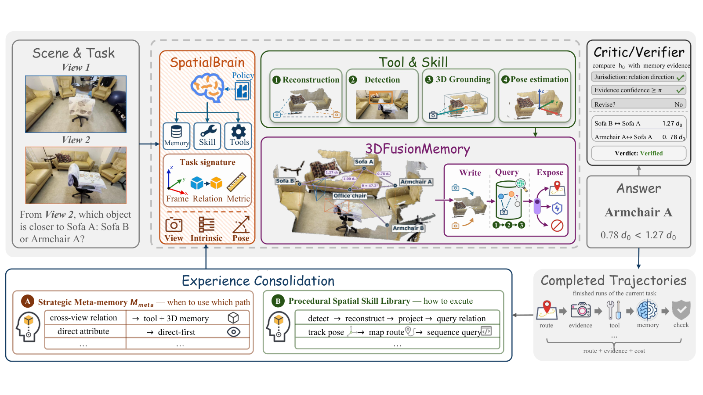

Paper Analysis
01 · Three Different Things Called Memory
同样一组图像，有的问题直接看图即可回答，有的问题必须先绑定参考系，还有的问题需要跨视角测量。SpatialBrain 研究的是如何选择这些计算资源，而不是给所有问题都强制建一张三维图。输入为多张图、问题和可选答案，输出为答案及工具执行轨迹。
第一个状态是当前场景的 3DFusionMemory：对象、相机、关系和路线；第二个是 Skill Library：可复用的参数化计算步骤；第三个是 Spatial Cognition 的经验：什么任务条件下使用哪种步骤、过去是否出现过程错误、花费多少。混在一起说“模型记住了空间”会掩盖三者不同的作用。
模型权重固定。论文的 self-evolution 是跨任务更新外部经验状态，不是在线梯度训练。新场景不能继承旧场景坐标，已有程序则可以用新场景的对象重新绑定参数。
S_i,t = (G_i,t, H_b) G_i,t: scene evidence for task i at step t H_b = (L_b, P_b): skills and strategic experience committed before block b
Paper Analysis
02 · Reading the Original Architecture

Yifan Zhou et al. · Original figure, unmodified; illustrative scene · Copyright retained by the authors; arXiv non-exclusive distribution license · Paper & Caption ↗
Figure 1 左侧输入图像与问题，中间控制器先判断问题的参考系、关系范围和测量要求。它决定采用 direct-first 还是 tool-assisted 路径，以及 memory 是关闭、仅供答案核验，还是可直接暴露给规划器。
上方工具层提供检测、重建、三维定位与位姿估计。工具结果落到中间的 3DFusionMemory，随后由技能查询对象关系，或由右侧 verifier 将候选答案与证据比较。图中的“Verified”是按系统规则通过核验，不代表外部真值认证。
底部是较慢的经验更新过程。当前任务结束后，执行路线、工具序列、过程检查和成本被抽象为记录；同一个任务块结束后才统一合并。块内所有任务读取同一个已提交快照，不读取彼此尚未完成的新经验。
图里的场景是说明性示意，并不是平均性能的证据。读图时要沿“当前观察→证据→计算→答案”理解任务内路径，再单独看“完成轨迹→经验库→后续任务”的跨任务路径。
Paper Analysis
03 · What the Scene Graph Stores
场景图 G=(V,E,C,R) 分别保存对象节点、空间关系、相机状态和有序路线。对象包含检测结果、三维中心、可用点集与范围、姿态、语义方向轴、支持视图等。深度和相机位姿把不同观测放到共同参考系，估计为同一对象的观测再融合。
附录 D 的中心更新是置信加权平均。旧中心 μ 的累计权重为 W，新视图中心为 μ_v、权重 w，则新中心为 (Wμ+wμ_v)/(W+w)。新中心本身来自投影点的加权质心，权重是相对支持程度，不是经过标定的“该对象正确概率”。
教学例子：两个观测的中心分别是 (0,0,0) 和 (2,0,0)，权重为 3 和 1，融合中心为 (0.5,0,0)。公式只在对象匹配正确、坐标兼容时有意义；把两个同类但不同实例误匹配，平均值会落在错误位置。
查询返回距离、相机或对象坐标系下的方向，以及置信度、支持视图和歧义。论文部分示例使用重建单位或相对长度 d0，而不是米。多视图都在同一场景图中也不代表每个节点都获得多视图融合：附录给出了所有节点仅有单视图支持的实例。
mu_new = (W * mu + w_v * mu_v) / (W + w_v) W_new = W + w_v, provided W + w_v > 0 G = (object nodes, relations, cameras, route history)
Paper Analysis
04 · How Experience Changes a Later Decision
一个技能由适用条件、输入类型、参数化工具程序和输出证据组成。例如相对方向计算必须先选参考系，再求位移。它保存的是如何计算，不能直接给出上次问题的答案。已有技能从 hint-only 变为 executable，也不等于发明了一个新算法。
任务签名记录参考系、关系范围、输出形式、时序结构、是否需要度量和视图数量，不使用标准答案或 benchmark 类别标签。控制器依据签名和早先经验选择路线、memory 接口、允许的技能和核验策略。
附录 D 的可执行配置要求替代路线有足够历史样本、完整成本记录和可接受的过程风险。它比较候选成本上界与默认成本下界，要求保守估计下仍有节省；证据不足就保留默认路线。每次最多改变一个学习得到的路线或 memory 因素。
任务结束后只保留抽象的条件、操作、失败与成本记录，移除答案、字面坐标和原始任务内容。下个块才能利用这些记录。这样的边界旨在允许程序和策略迁移，同时避免把场景答案串到新任务。
注意这些风险检查不是准确率奖励。工具正常结束、返回格式正确，仍可能基于错误检测或错误参考系。无标签过程反馈适合判断执行可靠性，却不能自行确认答案正确。
g_i = policy(signature_i, P_b, L_b) g_i = (route, memory mode, permitted skills, verification) P_(b+1) = U_policy(P_b, abstracted trajectories in block b) L_(b+1) = U_skill(L_b, abstracted trajectories in block b) These are external-state updates, not gradient steps.
Paper Analysis
05 · Whole-System Gains and Their Scope
主表最可比的是相同 GPT-5.6-sol 骨干、相同题目的 Direct 与 SpatialBrain。MMSI、MindCube、OmniSpatial、SpaceDG、SAT 分别评 1000、1050、1533、1000、150 题；SpaceDG 数值题用 MRA，且只取固定子集。SAT 固定选项顺序，未作循环排列评测。
下表显示最大收益在 MindCube，为 20.4 点，其余改善较小，SAT 持平。五项平均是未按题数加权的均值，不能把它当全部题目上的统一准确率。其他论文行有不同骨干与评估协议，只能提供背景定位。
收益也并非覆盖每个类型。MMSI 总错误由 462 降到 429，但包含 199 次纠错和 166 次由对变错；多步题错误从 83 升到 94。这说明引入工具和记忆可能修复一类问题，同时产生新的失败。
论文展示了坐标核验解决楼梯相对方向的案例，也展示跨视角比较归一化检测框高度的错误捷径：即使答案碰巧正确，缺少公共高度参考系的计算仍不成立。学习笔记应同时保留答案指标与证据链质量这两个层面。
| Benchmark | Direct | SpatialBrain | Change |
|---|---|---|---|
| MMSI | 53.8 | 57.1 | +3.3 |
| MindCube | 67.2 | 87.6 | +20.4 |
| OmniSpatial | 68.3 | 69.1 | +0.8 |
| SpaceDG subset | 56.9 | 57.9 | +1.0 |
| SAT | 91.3 | 91.3 | 0.0 |
| Unweighted average | 67.5 | 72.6 | +5.1 |
Paper Analysis
06 · Why the Memory Ablation Needs the Appendix
主文组件图的 Full 为 87.6，无 Skill 为 76.7，无 memory 为 75.2，无 Cognition 为 78.8。只看图会很容易得出 memory 带来 12.4 点提升的结论，但附录 A 明确说明：这些大差距还包含其他配置变化与未回答数量差异。
严格配对的 Full/no-Memory 是 75.9 和 75.2，整体差距约 0.67 点，而不是 12.4 点；分类型差距为 +2.83、−5.20、+1.50。移除 memory 同时移除了基于它的答案核验，仍然没有隔离“存储本身”的纯效果。
主组件图 Full/no-Skill 的共同回答子集有 908 题，正确数分别为 799 和 805。Full 在整个集合得分更高，部分原因是更少空答案；不能把总分差全解释成每个已回答问题都推理得更准。
后续可执行配置的经验送达统计显示，过去记录进入 231/1000 个 MMSI 任务和 212/1050 个 MindCube 任务。这证明先前经验可到达后续决策，不证明采用经验后答案变好。早期另一组 GPT-5.5 检索实验甚至没有改善整体准确率或成本。
要归因于自演化，需要相同初始技能、工具与预算，只冻结经验更新的对照，并同时计入获取经验的代价。论文也明确将这种 initial-frozen 对照作为关键比较。
Paper Analysis
07 · What Transfers to Semantic Reconstruction
对语义结合流式重建，这篇最有用的设计原则是把“对象是什么、有哪些观测支持它”和“应该怎样利用这些证据”分开。语义可以帮助组织对象节点与参考系，但它不自动修正深度；这里的融合公式只消费已经估计的几何，没有用语义 loss 更新重建 backbone。
如果将它用作下游任务，可以检验语义几何 memory 是否让跨帧关系查询更稳。但若论文主张是语义改善重建，仍需未来帧深度、位姿或点云指标，以及容量、算力和输入条件一致的对照。问答提升不能替代几何验证。
它也提醒 memory 研究不要仅报告“写入了多少语义”或“检索到了多少记录”。存储覆盖、检索命中、实际采用、正确证据和最终收益是连续但不同的事件。对我们而言，应把语义写入后的可解码性与后续几何增益分别测量。
本文依据 v1 全文及附录分析。本次未核实可运行的官方实现，不能进一步审计对象关联、工具配置及每条路径的实际开销；论文报告的案例节省也不能直接推广为平均系统加速。
Discussion
Reading Questions
Does scene geometry persist across tasks?
不。场景图逐任务重建；跨任务保存的是抽象步骤、任务条件与资源使用经验，排除以前答案和字面坐标。
Is self-evolution gradient training?
不是。骨干固定，外部策略记录和技能可用性在任务块之间更新；过程反馈也不是标准答案奖励。
Does the paper isolate a large memory gain?
没有。附录的严格配对 Full/no-Memory 只有约 0.67 点差距，而且移除范围还包括答案核验。主图较大差距受配置和空答案影响。
Does memory coverage measure usefulness?
不。非空图、记录送达、技能执行和答案正确是不同事件，必须分别记录才能解释记忆是否真正有用。
References
One original overview figure is reproduced for focused scholarly commentary with attribution. The arXiv distribution license is not a general reuse license. The figure scene is illustrative. First submitted and read version: October 21, 2026, v1. No runnable official implementation was verified in this reading.
Verified on 2026-10-25. Paper results refer to the linked versions. Repository references were checked on this date.